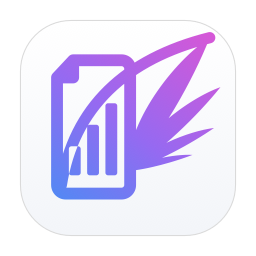

iNvoice
Česky · English · Zásady ochrany soukromí / Privacy Policy · Podmínky užívání / Terms of Use
Podpora
Chybu nebo připomínku nejrychleji pošlete přímo z aplikace: na Macu nabídka Nápověda → Nahlásit chybu nebo Napsat připomínku, na iPadu nabídka ⋯ vpravo nahoře. E-mail se předvyplní verzí aplikace a systému, takže je nemusíte dohledávat. Napsat můžete i rovnou na rudolf@melounek.cz.
Podrobný návod k celé aplikaci je v aplikaci samotné, na Macu v nabídce Nápověda → Nápověda iNvoice, na iPadu v Nápovědě v postranním panelu (kapitola Na iPadu).
Časté dotazy
Podá aplikace přiznání za mě?
Ne. Připraví soubory XML pro portál MOJE daně a pro ČSSZ, nebo je pošle vaší datovou schránkou, ale vždy až na váš pokyn. Za správnost podání odpovídáte vy, proto si čísla před podáním projděte.
Kde jsou moje data?
Ve vašem Macu nebo iPadu, a pokud zapnete synchronizaci, ve vašem soukromém iCloudu, takže je máte na obou zařízeních. Autor aplikace k nim přístup nemá. Více v zásadách ochrany soukromí.
Jak přejdu z jiného fakturačního programu?
Import přečte CSV i XLSX a sloupce si přiřadí sám. Prázdnou šablonu stáhnete na Macu v nabídce Soubor → Stáhnout šablonu importu, na iPadu tlačítkem Stáhnout prázdnou šablonu na obrazovce importu.
Jak zálohovat?
V Nastavení zapněte automatickou zálohu do složky (na iPadu ji vyberete v Souborech, třeba na iCloud Drive). Jednou týdně se uloží datovaný soubor včetně originálů přijatých dokladů a drží se posledních šest.
Funguje aplikace i pro neplátce DPH a paušální daň?
Ano. Režim nastavíte v průvodci při prvním spuštění a kdykoli ho změníte v Nastavení. Připomínky termínů se mu přizpůsobí.
Support
The quickest way to report a bug or send feedback is from the app: on the Mac Help → Report a bug… or Send feedback…, on the iPad the ⋯ menu at the top right. The e-mail comes prefilled with the app and system versions. You can also write to rudolf@melounek.cz.
The full guide is inside the app, on the Mac under Help → iNvoice Help, on the iPad under Help in the sidebar (chapter On the iPad).
Frequently asked questions
Does the app file my tax return for me?
No. It prepares XML files for the MOJE daně portal and the Czech Social Security Administration, or sends them through your data box, always only when you say so. You are responsible for the filing, so check the figures first.
Where is my data?
On your Mac or iPad and, if you turn on sync, in your private iCloud, so you have them on both devices. The developer has no access to it. See the privacy policy.
How do I move from another invoicing program?
The import reads CSV and XLSX and maps the columns itself. Download an empty template on the Mac from File → Download the import template…, on the iPad with the Download an empty template button on the import screen.
How do I back up?
Turn on automatic backup to a folder in Settings (on the iPad pick the folder in Files, for example on iCloud Drive). Once a week a dated file is saved, including the originals of received documents, and the last six are kept.